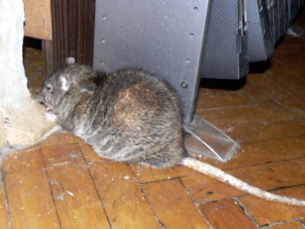
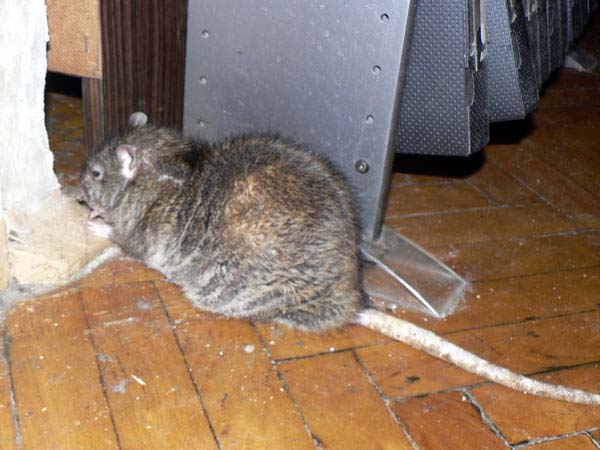
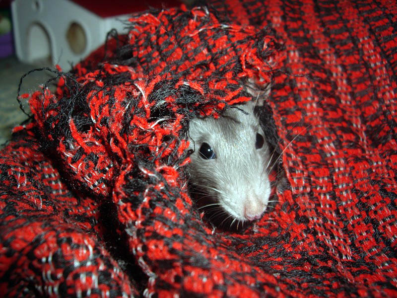
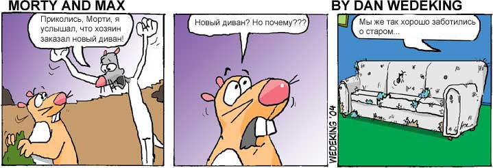

Warrax
Грызуны
версия 1.5 от 13/07/2012
Своими острыми как долото зубами, развивающими невероятное давление в 1688 килограммов на один квадратный сантиметр, крыса легко прогрызает свинцовые трубы и шлакобетонные блоки. Томас Кэнби |
Не все желаюшие впервые приобрести крыс (а также те, которые завели крыс дома случайно), представляют, с чем им придётся столкнуться. Если в одном тезисе, то: меркантильных крысоводов не бывает. На породистых кошках и собаках можно заработать, и испорченные ими вещи окупятся; крысы же недороги в смысле цены в магазине (а часто отдаются даром с рук), а вот потребность грыть у них постоянная — грызуны, понимаете ли. Это не прихоть: зубы растут постоянно, и их надо стачивать (иногда после травм зубы начинаю трасти криво, и их приходится самостоятельно регулярно укорачивать кусачками). Кроме того, в отличие от мышей, кроликов и пр. домашних грызунов, крысы не приспособлены для того, чтобы всю жизнь жить строго в клетке, для них желателен свободный или хотя и частый и долгий выгул по квартире.
Вот замечательное видео на тему статьи (добавлено 19.04.2016):
Эта статья наглядно иллюстрирует, какие бывают последствия. Если вы страдаете (либо наслаждаетесь) вещизмом — лучше не заводите крыс. Вот, придумался лозунг: Крысы — самые социалистические домашние животные, за дружеское общение в коллективе против потреблядства! :-)
Для начала — физиология.
Устройство погрызательного аппарата крыс
http://www.ratlove.info/publ/krysinaja_biologija/anatomija/podrobnee_o_krysinykh_zubakh/16-1-0-46
Зубы, наряду с хвостом, являются отличительной чертой крысы, её орудием выживания и добывания пищи. Они и сами являются пищей для формирования всевозможных заблуждений и ужастиков. В среде крысоводов крысиные зубы и результаты их использования — это часто повод для смеха и шуток, а, при сильном ущербе, и для легкой печали.
Вообще же зубы крысы — это замечательный инструмент, снабженный рядом уникальных особенностей и идеально приспособленный для крысиного образа жизни. Так как же они устроены...
У различных видов млекопитающих имеются четыре вида зубов, которые отличаются по форме, функциям, расположению во рту и по способности к восстановлению. Это: резцы, клыки, премоляры и моляры (коренные зубы).
У крыс присутствуют только два вида зубов (Рис.1): резцы и моляры. Резцы — длинные и острые передние зубы. Их четыре, по два сверху и снизу. Резцы крыс очень хорошо приспособлены к грызению и растут на протяжении всей жизни. Моляры — самые задние зубы во рту, они предназначены для того, чтобы измельчить пишу перед тем, как ее проглотить. У крыс 12 моляров, по 6 сверху и снизу (соответственно по 3 с каждой стороны челюсти). Моляры не растут и не заменяются, они остаются на протяжении всей жизни.
У крыс отсутствуют клыки и премоляры. Поэтому у крыс во рту есть длинный промежуток без зубов (диастема), это то место, где должны были быть вторые резцы, клыки и премоляры. Таким образом, у крыс имеется всего 16 зубов, по 8 сверху и снизу.
Резцы представляют собой 4 длинных передних зуба. Верхние резцы короче нижних и окрашены в более насыщенный желтый цвет. Как уже говорилось, резцы у крыс специально приспособлены для грызения и растут всю жизнь. Если не давать крысам грызть и стачивать зубы, то начнут расти по спирали с углом примерно 86 градусов. Поэтому у крыс всегда должна быть возможность стачивать зубы.
Зубы прорезаются у крысят примерно на 8-10 день после рождения. Скорость роста резцов достаточно велика. Так, у взрослой крысы верхние резцы вырастают примерно на 2,2 мм в неделю, а нижние – на 2,8 мм. Таким образом, зуб вырастает на свою полную длину за 40-50 дней. Такой быстрый рост защищает зубы и от появления выщерблин, так они быстро зарастают, а затем стачиваются.
Скорость роста резцов может меняться в зависимости от условий. Например, после подрезки они растут быстрее, примерно по 1 мм в день. Если крысе приходится грызть более твердые материалы, при этом, соответственно, зубы быстрее изнашиваются, то скорость их роста также возрастает. Более того, разные резцы могут иметь разную скорость роста в зависимости от собственной длины и длины соседних зубов: если какой-либо резец короче остальных, то и растет он быстрее. Однако если у крысы неправильный прикус, то она не может нормально стачивать зубы и они начинают перерастать.
Резцы у крыс окрашены желтым пигментом. Сначала зубы у крысят белые, но уже к 21 дню верхние приобретают легкий желтоватый оттенок. К 25 дню верхние резцы уже имеют отчетливую желтую окраску, а нижние начинают окрашиваться. К 38 дню зубы приобретают насыщенную желтую окраску, но верхние по-прежнему окрашены интенсивнее. Такая разница в цвете между верхними и нижними резцами сохраняется на протяжении всей жизни. У взрослых крыс верхние зубы имеют уже темный желто-оранжевый цвет, а нижние остаются желтыми.
На поперечном сечении резца (Рис.3) видно, что он состоит из трех слоев. Внутренняя часть – пульпа – окружена дентином. Далее следует эмаль, которая покрывает зуб только с передней стороны. Пульпа становится все уже и уже по мере приближения в концу зуба, а в самом конце она заполнена твердым материалом. Таким образом, чувствительная пульпа никогда не подвергается внешнему воздействию.

Рис.3 Поперечное сечение резца крысы
Резцы всегда остаются острыми благодаря тому, что крыса их стачивает. При этом челюсти совершают движение, когда зубы двигаются навстречу друг другу. За счет того, что резец покрыт эмалью только снаружи, снашивается более мягкий дентин, зуб затачивается под углом и образуется острая режущая кромка (Рис.4).
Рис.4 Стачивание зубов
Крыса может грызть, развивая при этом большую силу. Это обусловлено тем, что точки присоединения мышц, которые двигают нижнюю челюсть вверх и вниз находятся далеко впереди на носу. Такое расположение мышц позволяет крысе грызть эффективно и с большим усилием. Часть из этих мышц проходит позади глазного яблока, поэтому часто глаза крысы двигаются, когда она увлеченно стачивает зубы (Рис.5).
Рис.5 Схема расположения мышц, отвечающих за грызение
Когда крыса грызет, ее передняя челюсть выдвигается вперед, и резцы входят в соприкосновение, за счет этого моляры не имеют контакта друг с другом. Верхние резцы удерживают объект, а нижние его разрезают. Поэтому моляры оказываются не вовлеченными в процесс грызения и не изнашиваются.
Эмаль резцов крысы имеет очень большую твердость, 5,5 единиц по Моосу (у железа 4-5, стали – 5-5,5, алмаза 10). Твердость эмали зубов человека около 5 единиц.
У крыс имеются небольшие кожные складки с обратной стороны щек, которые находятся позади резцов и выступают в промежуток между ними и молярами. Эти складки образуют заслонку, предохраняющую крысу от попадания внутрь нежелательных частиц, например, образующихся в процессе грызения.
Соединение между половинами нижней челюсти крысы не монолитное, оно образовано пористой тканью, которая позволяет половинам немного поворачиваться, за счет чего становится возможным раздвижение нижних резцов на угол около 40 градусов. В процессе жевания, грызения, а также при укусе крыса регулирует степень раздвижения резцов (Рис.6).

Рис.6 Схема раздвижения нижних резцов
У крысы имеется 12 моляров, расположенных в задней части рта. Они представляют собой широкие, плоские неокрашенные зубы и служат для измельчения и перетирания пищи. Когда крысы жует, то нижняя челюсть сдвигается назад таким образом, что моляры могут соприкасаться друг с другом, а резцы нет, поэтому в процессе жевания задействованы только моляры.
Перевод (переработанный) статьи (с) Rat Teeth.
Последствия работы погрызательного аппарата крыс
Конечно, крысы очень мило улыбаются...

Но, если посмотреть в рот повниматльнее, то зубки видно лучше. Они, оказывается, большие, твёрдые и острые:
Бланш, владелец: YaOlga (02/09/2009)
Гранш, владелец: YaOlga (23/08/2009)

Нико, владелец: Rathunter (декабрь 2009)

Обратите внимание: на последнем фото один их верхних зубов не ровный.
Возможно, как раз подравнивали кусачками.
Если вам придётся заняться тем же, главное: не заденьте пульпу зуба!

Выдранный крысий зуб на фоне стандартного хирургического зажима.
Не удивительно, что крысы могут легко схватить большой кусок чего погрызть и утащить:


На фото с бубликом: крыс Бублик, владелец: Scratt (август 2009)
Иногда крысы, когда на них наводят фотоаппарат, едят аккуратно:
...но иногда остаётся немного мусора, и даже становится стыдно:
Впрочем, помусорить можно и несъедобным — коробкой, например:

Но временами всё это скапиливается — не забывайте подметать под шкафами!

Особенно любимое дело —драть обои.

На фото вверху и внизу — дон Рэба из Крыскиного Теремка (январь 2009).

...и его брат дон Румата.
Дон Рэба и большая часть Иннокентия в углу за шкафом (октябрь 2010).

Иннокентий, январь 2010. Хорошо виден некоторый дефицит обоев у шкафа наверху.
Здесь, помимо погрызенных обоев, видна защита проводов на колонке — обычный короб.

А то вот так смотришь — а провод к саббуферу перегрызен в нескольких местах.
Енисей и мелкий, ещё не рыжий, Эрик. Что с обоями — хорошо видно.

У нас тут гнездо!
Бригадный подряд.
 

Погрызание стен. Слева — неизвестная стена, погрызено
современное покрытие.
Справа — Иннокентий (февраль 2010), результат воздействия на бетонную стену.
Чтобы удобнее за шкаф ходить было.
Помимо обоев на стенах есть ещё занавески возле стен. Они тоже
могут пострадать!
Приходишь как-то домой (это нас дома происходило) и видишь вот такое:

Странно, правда? А вот и отгадка:
А потом — и такое, внаглую:

Важно: а если занавеска возле клетки, то...
Затащить что-то в клетку — это, можно сказать, крысиный долг.
ВНИМАНИЕ! На фото клетка слишком мала для содержвания крыс!

Смертельное убийство майки:
ВНИМАНИЕ! На фото клетка слишком мала для содержвания крыс!
Старая майка, клетку прикрыли специально.

Несчастная майка наутро...
ВНИМАНИЕ! На фото -- больничная клетка, она слишком мала для постоянного содержвания крыс!
А вот эта майка была новая... И ещё одна, Slayer, тоже. А у некоторых и кожаные штаны пробовали на прочность с понятными последстиями. Короче говоря, крысы дома помогают навести порядок: просто так валяться вещи оставлять нельзя. Очень полезные животные, дисциплинируют.

Кстати, в шкафы их пускать тоже нельзя. Вот это когда-то было... э-э-э, не помню чем.
Это вот ещё понятно, что сумка. Цвет "синий в дырочку".

А это вот — их собственное жилье, так что по-честному: грызут
всё.
Фото справа: Плинтус и Александра, владелец:
Vorona
Конечно, если занавеска лежит на кровати и называется простынью или пледом, принципиально это ничего не меняет:


На фото слева видны носы: Партизан, Сынок и его папа Чуча из Добрых рук, справа
— молодой Партизан.
Владелец —
Николай. (27/09/2011)
.jpg)



Рядом с пледами и простынями обычно есть подушки:

Нагваль Никодим: — Что пристали, учусь подушкой пользоваться (декабрь 2008).
Диванная подушка, крысомодифицированная.

Дуся и Сима, владелец: Iolia (19/02/2009)
Все эти предметы обычно лежат на мебели, поэтому ей тоже достаётся:
ВНИМАНИЕ! Далее наглядно видно, что нельзя плюхаться с
размаху на мебель!
Сначала надо убедиться, что на мебели (и внутри её) нет крыс!)


Слева: Белара Полкановна и Арабелла. Справа: Белара Полкановна лезет в дыру, рядом Арабелла, попы Бон Патапуфф и Александры (ноябрь 2008г), владелец: Vorona

Некоторые скажут: "Ха! Мы будем держать крыс в клетках, а
гулять они будут под присмотром!".
Это не поможет.
Ну, в коробчонке не удержишь, понятно.

Но и пластик не проблема.
Справа — результат работы Ктулху, владелец:
Vorona


Поэтому дырки в клетках приходится заделывать. Понятно, что грызучесть крыс зависит от личного характера. Ниже — наша клотка (поддоны) после Иннокентия, Дюка Нюкема и Джна Ди (последние двое успели внести модификации и после фото).


Прим.: вверху заделали, прогрызли низ.

Как видите, вы научитесь работе по пластмассе, с железом и даже бетоном.

В карманах тоже надо носить аккуратнее (Тимофей, 2005 г.).
Важное: ПРОВОДА

Больше всего крысы любят зарядки от телефонов, аудио- и видеокабели и USB-провода.
Причём специально будешь просить, так морду воротить будут:

— Не, я передумал. И провода грызть, да еще и Чубайса изображать!
Но иногда просить и надо:

Это — силовой провод, ОПАСНО!
Силовые провода надо убирать. Желательно вообще в короба, или хотя бы с тех
мест, где крысы лазят.
Компьютерные провода для крыс безопасны, но так вот делать тоже
не надо. а то их часто покупать придётся.
(задание: найдите на фото отрызенный провод).

ВАЖНО: не стоит рассчитывать, что крысы-де куда-либо не
доберутся.
На фото: погрызенный потолок.

Но иногда крыс можно использовать для маникюра, тоже польза.
Обобщаем материал:
-
Крысы — грызуны и при этом нуждаются в долгом выгуле! Если вас это не устраивает — не заводите.
-
Крысы дисциплинируют, так как надо убирать вещи в недоступные места, а не раскидывать.
-
Крысы могут незаметно прятаться под пледами, покрывалами и даже внутри мебели — будьте внимательны и осторожны!
-
Силовые провода по возможности надо убирать из крысиного доступа.
-
Следите за зубами крыс — в результате травмы и т.п. иногда зубы могут расти неправильно, их придётся аккуратно подрезать кусачками (кончики, не отрежьте живую ткань зуба!).
Вы думали, что ниже — юмор? Хе! Чистая правда!




05-06/07/2012
Внимание! Если вы видите на странице фото ваших крыс, вышлите, пожалуйста, мне на мыло имя животного и хозяина, желательно — месяц и год съемки. Я вставлю подпись.
Если у вас есть очень выразительное погрызательное фото, пишите warrax@warrax.net — добавлю в статью.